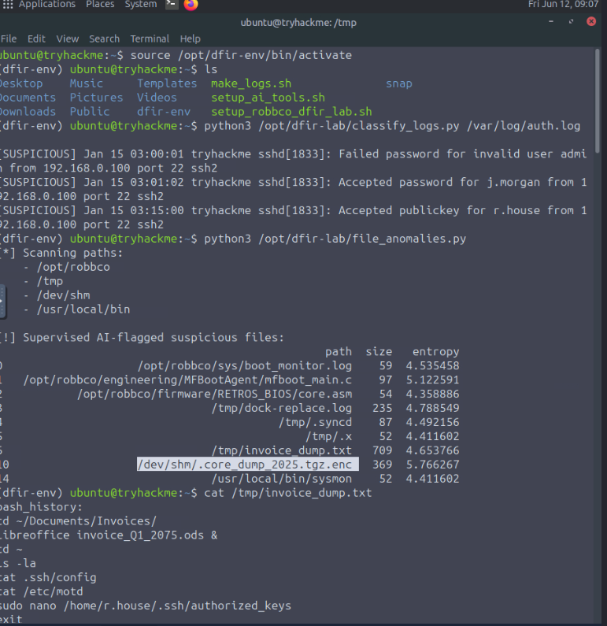
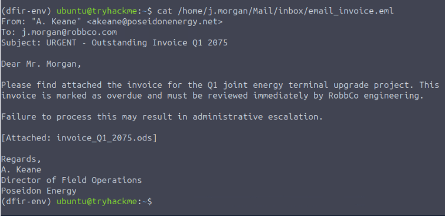
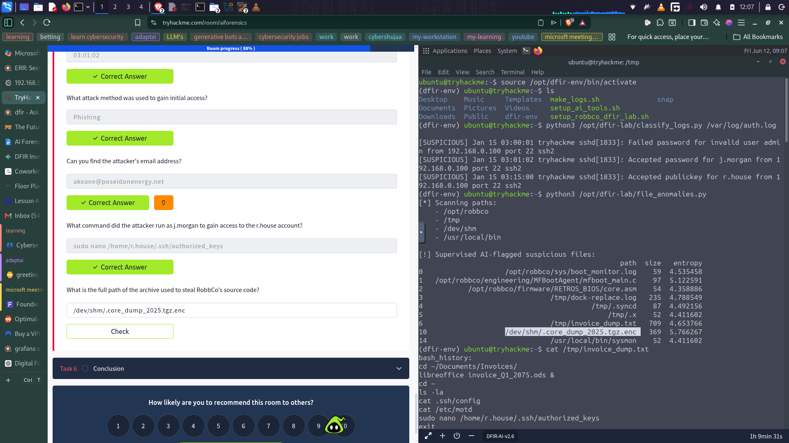

AI-Powered Digital Forensics Challenge
TryHackMe AI Forensics - Investigating a Data Breach with Machine Learning
Project Overview
In this project, I tackled the "AI Forensics" challenge on TryHackMe to simulate a real-world incident response scenario. My objective was to investigate a potential data breach at a fictional company, "RobbCo," by leveraging AI-enhanced tools to analyze system logs and identify suspicious file anomalies. This project highlights my ability to integrate Machine Learning into a Digital Forensics and Incident Response (DFIR) workflow.
Key Skills Demonstrated:
- Digital Forensics and Incident Response (DFIR)
- Log Analysis (Linux
auth.log) - Anomaly Detection with Scikit-learn
- Bash Command Line Proficiency
- Threat Hunting
- Security Report Writing
Investigation Process
Step 1: Environment Setup
I started by isolating my analysis to ensure the integrity of the evidence. I activated the dedicated forensic virtual environment on the target machine.
source /opt/dfir-env/bin/activate
Figure 1: Activating the DFIR environment and listing available tools
Step 2: AI-Powered Log Analysis
To quickly understand what happened, I utilized the classify_logs.py script. This tool uses a Scikit-learn model trained on auth.log data to distinguish between normal activity and suspicious login attempts.
python3 /opt/dfir-lab/classify_logs.py /var/log/auth.log
Figure 2: AI classification of auth.log showing suspicious login attempts
j.morgan at 03:01:02
Step 3: Identifying Initial Access Vector
To determine how the attacker gained their initial foothold, I examined the phishing email associated with the incident.
cat /home/j.morgan/Mail/inbox/email_invoice.eml
Figure 3: The phishing email that served as the initial access vector
akeane@poseidonenergy.net
Step 4: Tracing Privilege Escalation
I ran the file_anomalies.py script to identify suspicious files modified by the attacker. This led me to a file containing their bash history showing privilege escalation attempts.
cat /tmp/invoice_dump.txt
Figure 4: The attacker's bash history revealing privilege escalation commands
sudo nano /home/r.house/.ssh/authorized_keys
Step 5: Locating Stolen Data
The file_anomalies.py script flagged a file with extremely high entropy, a strong indicator of encryption used in data exfiltration.
python3 /opt/dfir-lab/file_anomalies.py
Figure 5: AI-flagged suspicious files highlighting the encrypted exfiltration archive
/dev/shm/.core_dump_2025.tgz.enc
Conclusion
Through this investigation, I successfully reconstructed the attacker's chain of events: initial access via phishing, privilege escalation through SSH key manipulation, and data exfiltration using encrypted archives. This challenge reinforced my understanding of how AI-powered tools can accelerate DFIR workflows and demonstrated the value of integrating Machine Learning into security investigations.